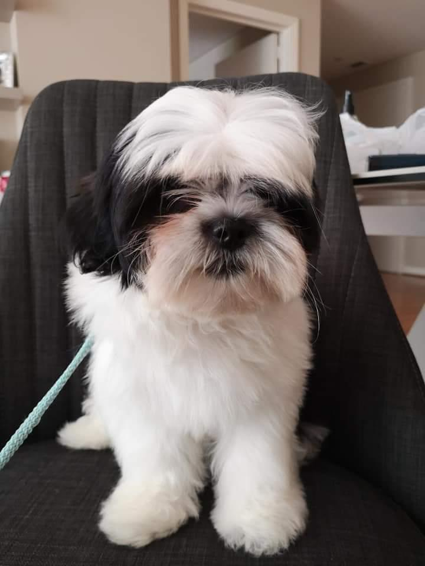

Sobre nosotros
Este proyecto comenzó impulsado por el profundo amor que sentimos hacia los animalitos. En nuestra familia, nos hemos dedicado a ayudar a cada perrito que cruza nuestro camino y siempre hemos buscado maneras de contribuir de forma positiva. La idea de establecer un pet shop surgió como una forma más efectiva de proporcionar comida y baños gratuitos a los perros callejeros y a aquellos dueños de mascotas que enfrentan dificultades económicas y no pueden costear estos servicios. Nuestro objetivo principal es tratar a todos los animales y personas con el mismo nivel de atención y cuidado que brindamos a los miembros de nuestra propia familia. Es por esta razón que, al vivir en esta comunidad, decidimos llevar nuestra dedicación y servicios a domicilio, para que las personas puedan disfrutar de la misma calidad de atención en la comodidad de sus hogares.
Nuestros peluditos
pluto antes
Despues

Homero antes
Despues

Luna antes

Despues